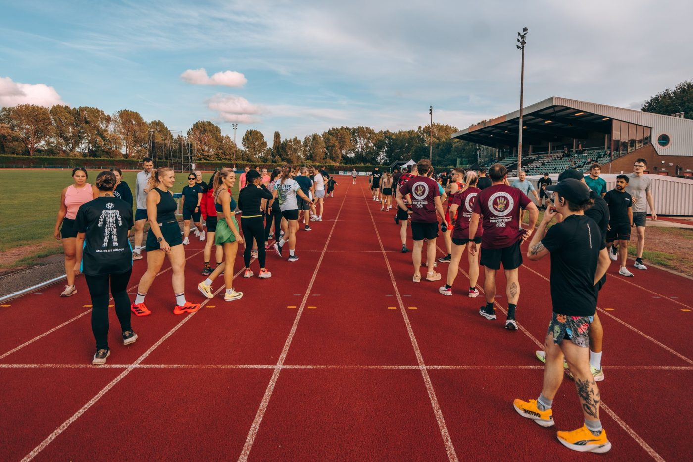
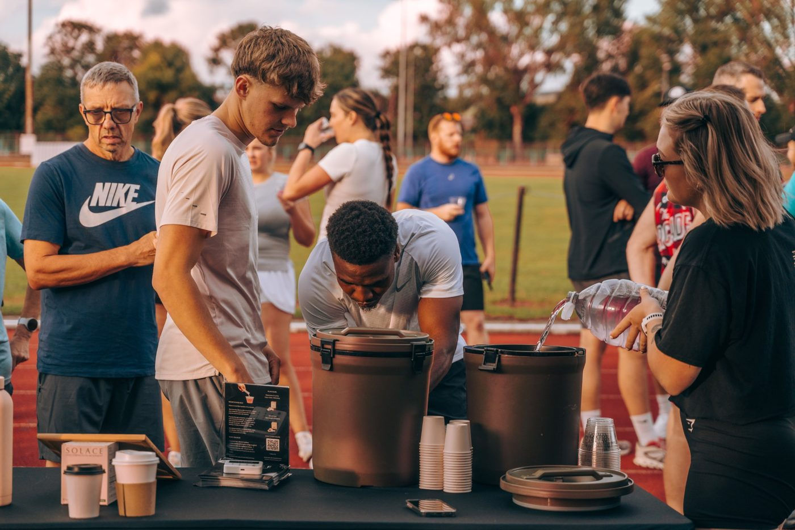
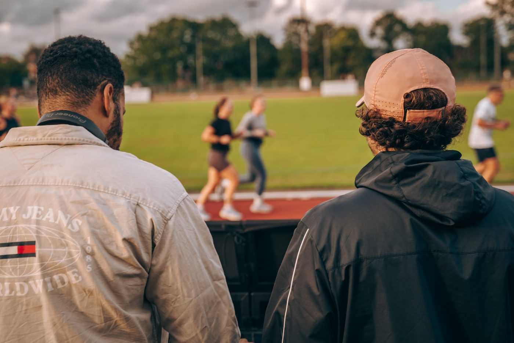
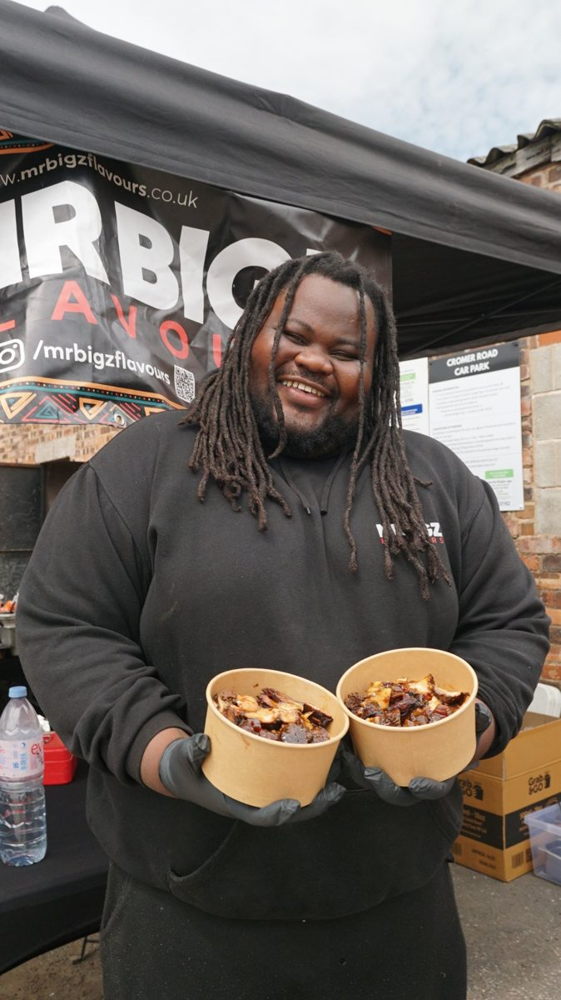
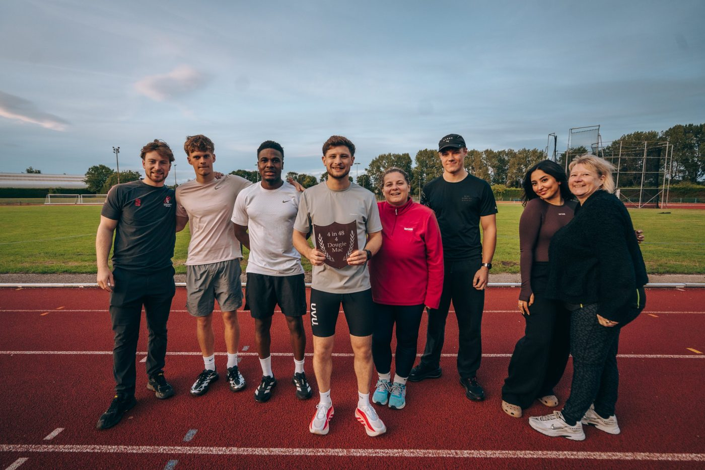
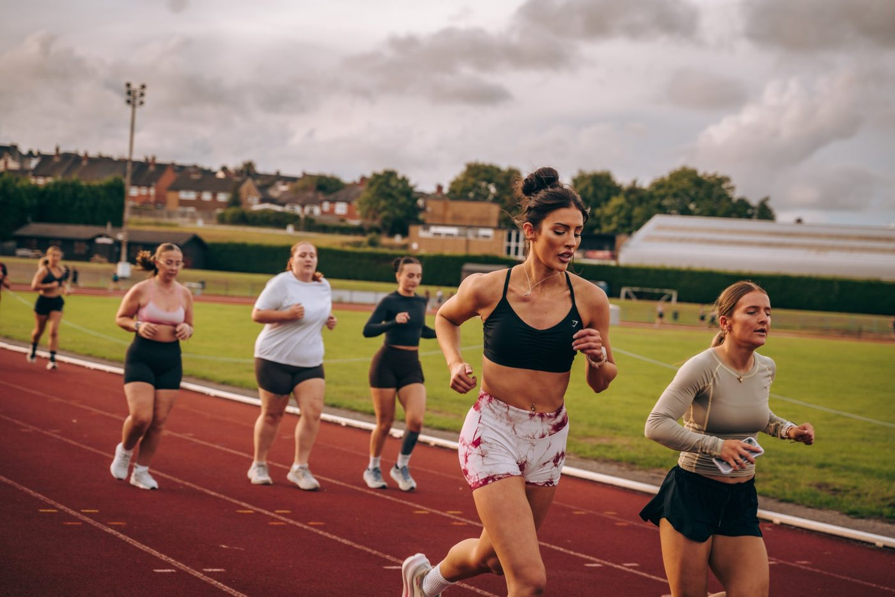
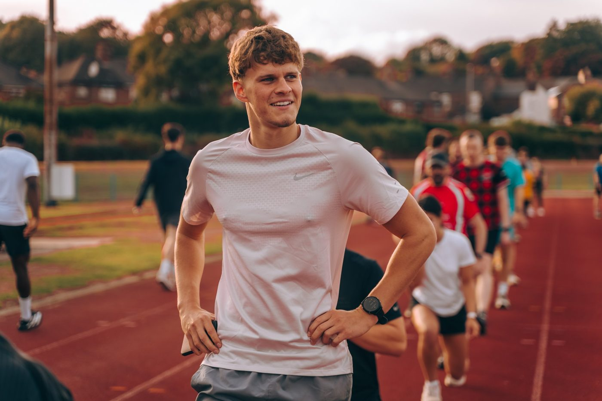
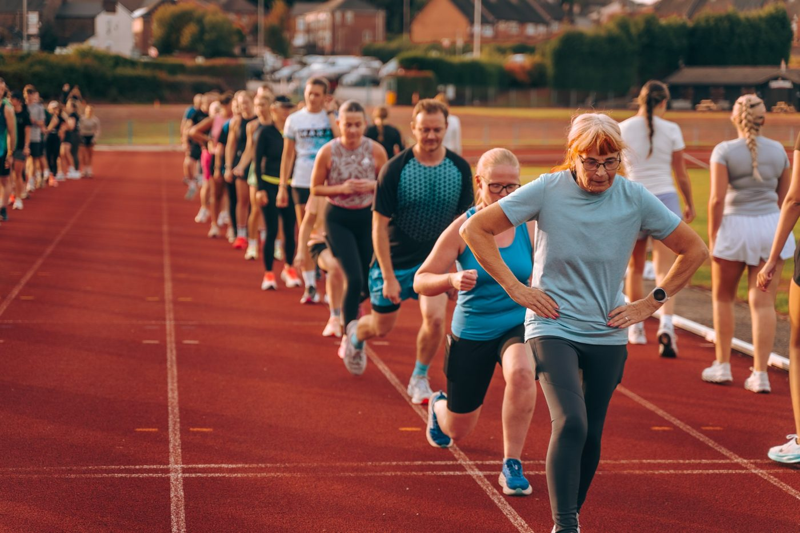

Stoke Runs Here.
One Track. One Community.
Free monthly running events bringing Stoke-on-Trent together.
— What Is Track Social?
More Than a Run
Track Socials are free monthly community running events held at Northwood Stadium on the last Monday of every month.
Each one brings together local running clubs, people of all abilities, independent businesses and the wider community through running, music, food and good company.
It's not about how fast you go. It's about turning up.
We run Track Socials to remove the barriers that stop people getting active, help newcomers build confidence, and create a space where people can connect, whether it's their first lap or their hundredth.
- Running clubs
- First-timers
- All abilities
- Local businesses
- Music
- Food & drinks


— What to Expect
How a Track Social Works
Every Track Social follows the same easy format, so you'll know exactly what you're turning up to.
-
Group Warm-Up
A welcoming warm-up led by that month's guest running club.
-
Track Session
An inclusive interval session on the track, set up so every ability can join in.
-
Cool-Down
We finish together with a group cool-down.
-
Music & Entertainment
Live DJs and a lively atmosphere from start to finish.
-
Food & Refreshments
Local food and drink vendors, plus refreshments from our event partners.
-
Community & Connection
Meet new people, find a running club that suits you, and stay for the social.
No pressure. No judgement. Just running together.
— Our Next Track Social
See You on the Track
— Supporting Local Running Clubs
A Different Club Every Month
Each month we invite a different running club to lead the session, showing off the variety of running communities across Stoke-on-Trent.
It's a chance for clubs to introduce themselves to new runners, grow their membership and help build an inclusive, city-wide running community.
— More Than Running
Come for the Run. Stay for the Atmosphere.



Track Socials bring together local businesses, food vendors, DJs, fitness brands and families. You don't have to run to come along. Plenty of people come just for the music, the food and the company.
Businesses who've been part of it
- SOLACE Performance
- Goodwins Coffee
- MrBigz
- Mughal Café
- Peppers Bar
- Prep Cuisine
- WeAreSettingz
- PlayBox
— Our Community in Action
Stoke Runs Here



[Participant quote]
— [Name, first-timer]
[Participant quote]
— [Name, running club]
[Participant quote]
— [Name, partner business]
— Questions
Track Social FAQs
How much does it cost?
Nothing. Track Socials are free to attend, whether you run or just come for the atmosphere.
Do I need running experience?
No. The session is designed for every ability, from first-timers to club runners. Go at your own pace, walk if you need to, and nobody will judge you.
How do I register?
Tap "Register for Free" on this page. It takes a minute on your phone and helps us know how many people to expect.
What should I wear?
Comfortable sports clothing and running trainers. Bring a layer for afterwards and a water bottle. Spikes aren't needed.
Where is it?
Northwood Stadium, Keelings Road, Northwood, Stoke-on-Trent ST1 6PA. Head for the athletics track in front of the grandstand.
Is there parking?
Yes, there's an on-site car park. [confirm any parking charges on the night]
Is it accessible?
[confirm accessible parking, step-free access to the track and accessible toilets] If you have a question about access, get in touch before the event and we'll help.
Can children take part?
[confirm minimum age and whether under-16s need an adult running with them]
— Get Involved
One Track. One Community.
Join Our Next Track Social
Individuals, friends and families are all welcome, whatever your experience or fitness level.
Register for FreeBecome a Guest Running Club
Lead a future session and introduce your club to runners across the city.
Get in TouchBecome a Community Partner
Local businesses, food vendors, fitness brands and community groups: support or take part in a future Track Social.
Partner With UsJoin our WhatsApp group for dates and announcements, and follow along for photos from every Track Social.